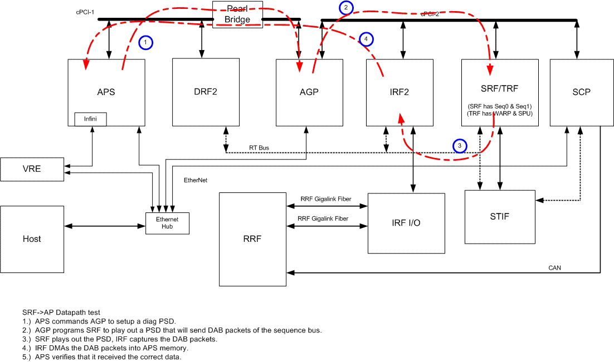

Proprietary to General Electric
Direction 5500113, Rev# 3
Discovery MR450 1.5T Service Methods
Module Version 1.0, Version Date 4/26/07
Proprietary to General Electric |
Diagnostics >> MGD Chassis >> MGD Data Paths
This test verifies the data path between SRF and AP DAB buffer as well as DAB packet termination modes. It utilizes a PSD to generate test patterns, which are received by IRF DAB FIFO via the sequence bus.
The test tasks are running on both AGP( master) and APS ( slave) , The Master test task performs necessary test specific initialization and plays out the test PSD. The slave task sets up the DMA transfer with destination address and data size and validate the data at the end of the test. Because the AP DAB buffer, the destination of the DMA transfer is memory-mapped into APS space, its data can be easily read from APS, thus to be validated.
SRF
AGP
APS
IRF
SP
Illustration 1: SRF to AP Block Diagram

Once a complete DAB packet is built in the DAB FIFO, the IRF will initiate a DMA transfer and send the data to the AP memory space. The data is then validated by APS.
The diagnostic will return PASS or FAIL.
The DMA transfer is initiated by IRF using the demand mode DMA feature of the PCI9054 chip residing on the IRF (see IRF DRS for details): once a complete DAB packet is constructed in the DAB FIFO, the DMA transfer will occur on demand) by sending data in the DAB FIFO to the requested destination address.
APS Board Help Page: /csd/mr_csd/serviceDesktop/docs/cclass/aps_board/aps_board.htm
AP Board Help Page - Reflex 200 & 400/csd/mr_csd/serviceDesktop/docs/cclass/ap_boards/ap_boards.htm
AP Board Help Page - Reflex 200B & 400B/csd/mr_csd/serviceDesktop/docs/cclass/ap_boards/ap_boards2.htm
AGP Help Page: /csd/mr_csd/serviceDesktop/docs/cclass/agp_board/agp_board.htm
IRF Help Page: /csd/mr_csd/serviceDesktop/docs/cclass/irf_board/irf_board.htm
SRF Help Page: /csd/mr_csd/serviceDesktop/docs/cclass/srf_trf_board/srfOrTrf_board.htm